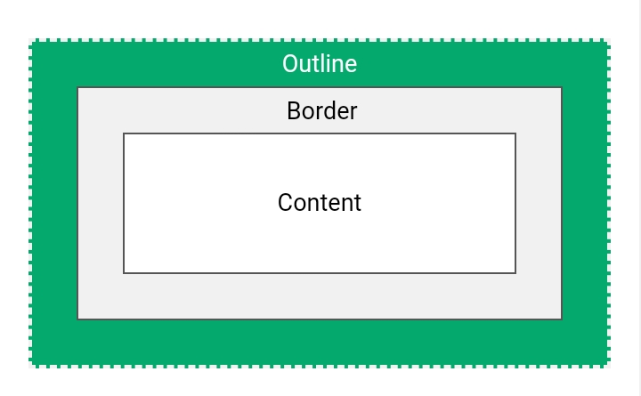

An outline is a line drawn outside the element's border.
This element has a 2px black border and a green outline with a width of 10px.
An outline is a line that is drawn around elements, OUTSIDE the borders, to make the element "stand out".
CSS has the following outline properties:
Note: Outline differs from borders! Unlike border, the outline is drawn outside the element's border, and may overlap other content. Also, the outline is NOT a part of the element's dimensions; the element's total width and height is not affected by the width of the outline.
The outline-style property specifies the style of the outline, and can have one of the following values:
Demonstration of the different outline styles:
p.dotted {outline-style: dotted;}
p.dashed {outline-style: dashed;}
p.solid {outline-style: solid;}
p.double {outline-style: double;}
p.groove {outline-style: groove;}
p.ridge {outline-style: ridge;}
p.inset {outline-style: inset;}
p.outset {outline-style: outset;}
A dotted outline
A dashed outline
A solid outline
A double outline
A groove outline. The effect depends on the outline-color value.
A ridge outline. The effect depends on the outline-color value.
An inset outline. The effect depends on the outline-color value.
An outset outline. The effect depends on the outline-color value.
Note: None of the other outline properties (which you will learn more about in the next chapters) will have ANY effect unless the outline-style property is set!